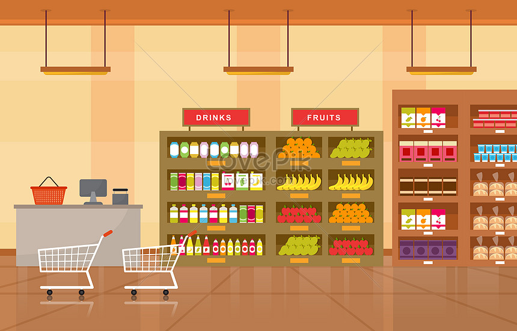

About me
My name is Shahar Horovitz,
And I’m a data analyst with a strong passion for uncovering insights through data.
I enjoy working with complex datasets, finding patterns, and translating numbers into meaningful stories that drive smart decisions.
I’m especially interested in applying my skills to solve real-world challenges, support strategic thinking, and collaborate on projects that blend technology and creativity to make a measurable difference.

A new database named "Sales" was developed by extracting and integrating relevant data from the AdventureWorks2022 database. It includes key entities such as SalesTerritory, SalesPerson, Customer, and Product. This database served as the
foundation for executing research queries focused on analyzing sales trends, customer behavior, and product performance.
Advanced SQL
"Wide World Importers"
database Insights
This project delves into the Wide World Importers database, representing a global wholesale distribution scenario. It focuses on building sophisticated SQL queries to examine sales trends, customer patterns, product effectiveness, and additional business metrics. Core activities include measuring growth over time, ranking clients, pinpointing best-selling items, and evaluating supplier reach. The project makes use of advanced SQL features such as window functions, aggregations, and pivot tables to uncover meaningful insights for business decision-making.

This project, built using Python, explores SuperStore sales data to extract meaningful business insights. It examines key areas such as profitability, regional trends, customer segments, shipping efficiency, and product categories. By utilizing tools like pandas, matplotlib, seaborn, and Jupyter Notebook, the analysis provides evidence-based recommendations aimed at enhancing strategic planning and boosting business outcomes.
POWER BI
Business Insights Dashboard
Business Insights is a Power BI project developed to deliver a unified and transparent view of critical organizational metrics, spanning Sales, Customer Engagement, Product & Inventory, and HR. This dynamic dashboard equips decision-makers with real-time insights, allowing them to monitor performance, identify patterns, and take strategic action. By bringing together key KPIs in a user-friendly format, Business Insights enhances the ability to make quicker, smarter, and more informed decisions across the organization.